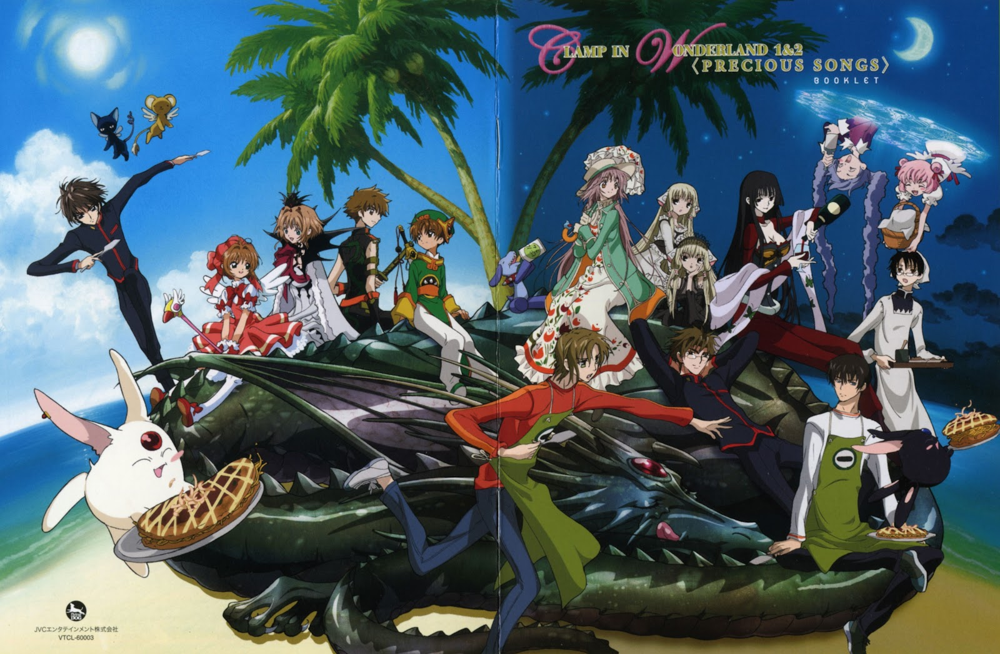
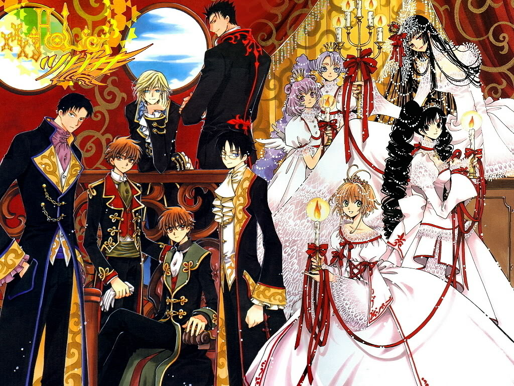
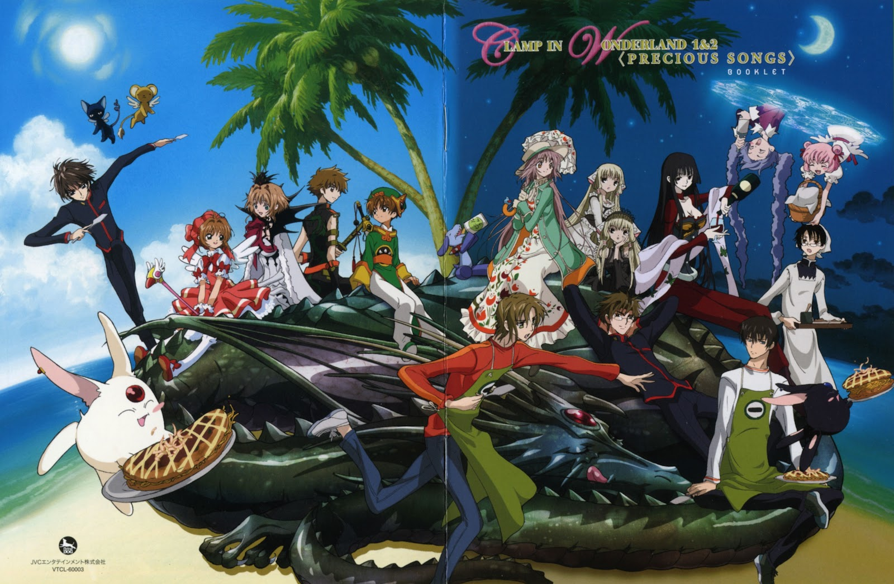
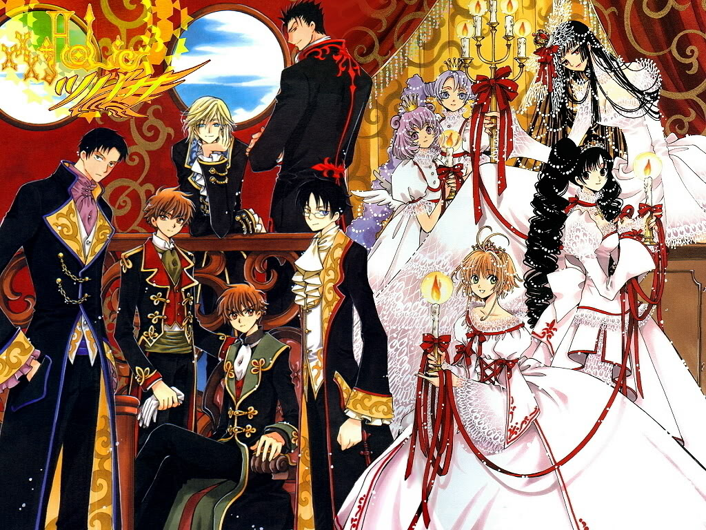
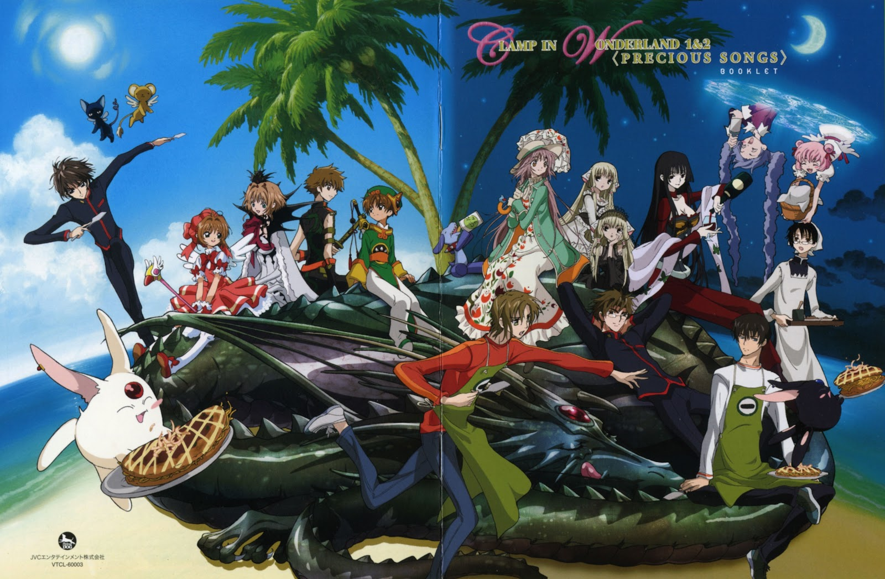
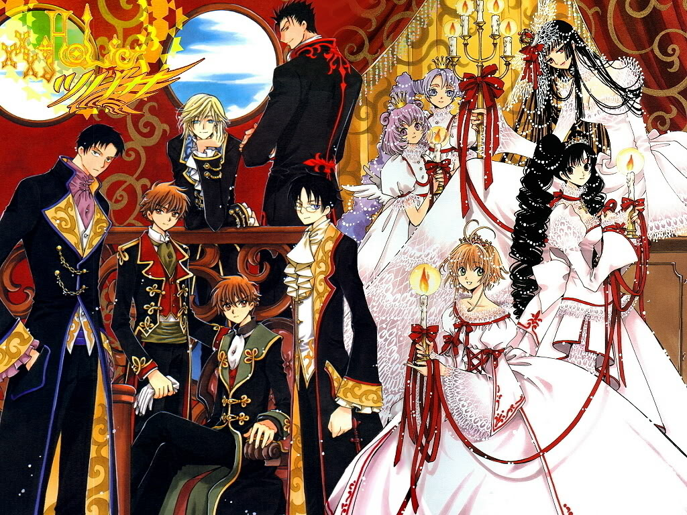
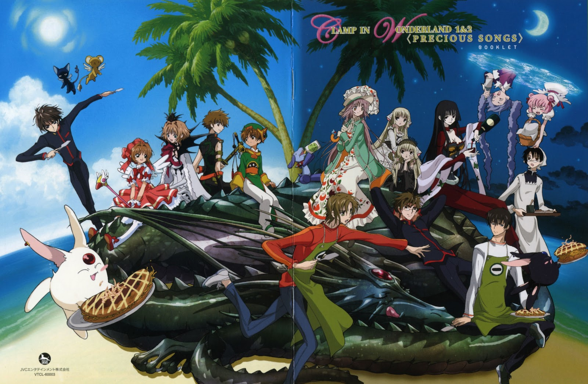
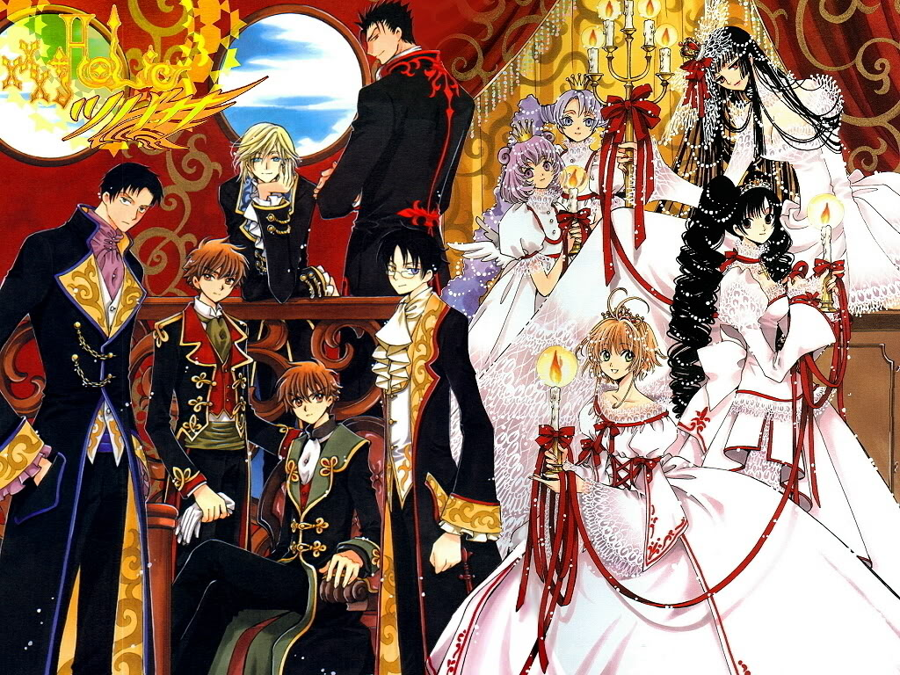

Originally began as a doujinshi circle called Clamp Cluster, they are now an all-female Japanese manga artist group that formed in the mid-1980s. It consists of leader Nanase Ohkawa, and three artists whose roles shift for each series: Mokona , Tsubaki Nekoi , and Satsuki Igarashi.